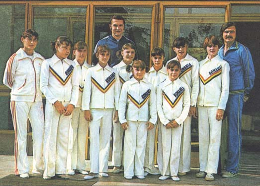

Lavinia Agache (ROM)
1983 European AA Silver Medalist and B
Champion
1984 Olympic Team Gold Medalist and V Bronze Medalist
|

Lavinia Agache (front right) in 1980.
Medal Total
- Olympic Games: 1
Gold, 1 Bronze
- World Championships: 3 Silver, 1 Bronze
- World Cup: 1 Silver, 1
Bronze
- European Championships: 1
Gold, 2 Silver, 1 Bronze
|
Lavinia was born on February 11, 1967 in Caiute.
She began gymnastics in 1974 with coaches Mihai Agoston and Maria Florescu-Cosma.
She was selected to train in Deva, first under Bela and Marta Karolyi, and later
under Octavian Belu, Maria Florescu-Cosma, and Adrian Goreac. She had a very successful
international career (third at the 1982 World Cup and second at the 1983 European
Championships). Her career ended at the 1985 University Games, where she
broke her kneecap warming up on beam. She finished her university studies
in Romania and, in 1991, came to the US to coach. She currently coaches at Nova Gymnastics in Davie, FL.
-
- Competition Results
-
- 1977
Romanian Cup: 2nd AA (Category IV)
- 1978
Romanian Championships: 2nd AA (Category IV)
1979
- Jr. BUL-ROM Dual Meet: 1st Team, 1st AA
- Jr. ROM-GDR Dual Meet: 1st Team, 3rd AA, 1st FX, 2nd VT
- Sports Schools Championships: 1st AA (Category I)
-
- 1980
- GBR-ROM Dual Meet: 1st Team, 6th AA
- Jr. European Championships: 3rd AA, 4th V, 4th FX, 6th UB
ROM-SUI Dual Meet: 1st Team, 4th AA
-
- 1981
- All-American Classic: 3rd AA
- Balkan Championships: 7th AA, 3rd V
- International Junior Championships: 1st AA
- World Championships: 4th Team, 7th AA, 5th V, 7th UB
-
- 1982
- Antibes International: 5th AA, 2nd V, 2nd B
Balkan Championships: 3rd AA, 1st V, 1st FX, 2nd UB
- Cote d'Azur International: 1st AA
HOL-ROM Dual Meet: 1st Team, 3rd AA
- International Championships of Romania: 3rd AA, 1st B, 2nd FX
- Jr. Catania Cup: 2nd AA
- Milan Grand Prix: 1st AA, 1st V, 2nd B, 2nd FX, 3rd UB
Romanian Championships: 1st AA, 1st UB, 1st B, 1st FX, 3rd V
ROM-GBR Dual Meet: 1st Team, 1st AA
- Rouen International: 1st AA, 1st V, 1st UB, 2nd FX, 3rd B
- World Cup: 3rd AA, 2nd FX, 5th V, 5th UB,
5th B
-
- 1983
- Catania Cup: 1st AA
- European Championships: 2nd AA, 1st B, 2nd UB, 3rd V,
8th FX
- FRG-ROM Dual Meet: 1st Team, 2nd AA
- GBR-ROM Dual Meet: 1st Team, 1st AA
- Gymnastics Hit Parade in Rome: 1st V, 2nd FX
- International Championships of Romania: 2nd AA, 1st V, 1st B, 1st FX, 2nd UB
- Romanian Championships: 1st AA
- World Championships: 2nd Team,
6th AA, 2nd V, 2nd UB, 3rd B, 4th FX
-
- 1984
- Balkan Championships: 1st Team, 5th AA, 1st B
- ESP-ROM Dual Meet: 1st Team, 2nd AA
Golden Sands International: 3rd AA, 1st UB
- International Championships of Romania: 1st AA, 1st UB
- Olympic Games: 1st Team, 3rd V, 8th UB
- Romanian Championships: 2nd AA
ROM-TCH Dual Meet: 1st Team, 4th AA
-
- 1985
- HOL-ROM Dual Meet: 1st Team, 6th AA
- Hungarian International: 1st AA, 1st UB, 3rd V, 3rd FX
- ROM-TCH Dual Meet: 1st Team, 3rd AA
-
- 1991
- World Professional Championships: 4th FX, 6th B
- This page was created on January 25, 1998 and was last
updated June 13, 2026.
© Gymn
Forum